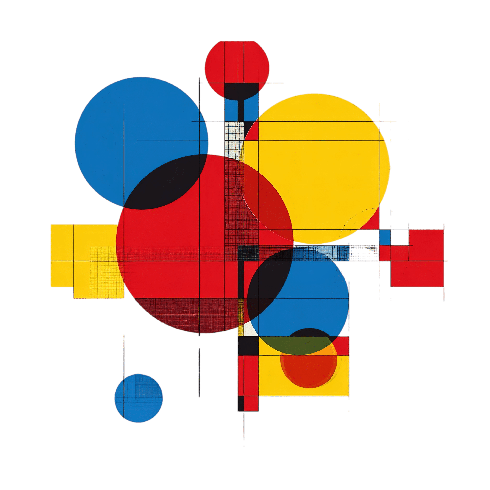

Cores
Primarias

Introdução
Definição de cores primárias no contexto digital No mundo digital, as cores são formadas por emissões de luz, e é esse fator que torna o sistema RGB a escolha ideal para telas e monitores. As cores primárias no contexto digital são vermelho (red), verde (green) e azul (blue). Essas cores, quando combinadas em diferentes intensidades, criam todas as outras cores visíveis em uma tela digital. Já no caso da impressão, usamos um modelo subtrativo de cores chamado CMYK, que é baseado em pigmentos físicos. As cores primárias neste sistema são ciano (cyan), magenta (magenta), amarelo (yellow) e o preto (key, representado pela letra K).

Vermelho
Representa energia, paixão e intensidade.
O vermelho é a cor que traz as duas energias mais vitais para o homem: o fogo e o sangue; A igreja usa o vermelho para simbolizar o sangue e a vida de Jesus. As batas dos sacerdotes, o manto do altar e comemorações como a Paixão de Cristo e a Sexta-feira santa;

Azul
Transmite calma, confiança e tranquilidade.
O azul é a cor que transmite uma energia essencial ao homem: a tranquilidade; A igreja usa o azul para simbolizar a serenidade, a fé e a devoção. As vestes e elementos litúrgicos podem apresentar esse tom em momentos de reflexão e devoção.
![]()
Amarelo
Simboliza alegria, luz, energia e criatividade.
O amarelo é a cor que traz uma das energias mais vitais para o homem: a luz; A igreja usa o amarelo para simbolizar a luz divina e a glória de Jesus. As batas dos sacerdotes e o manto do altar podem usar esse tom em celebrações solenes.